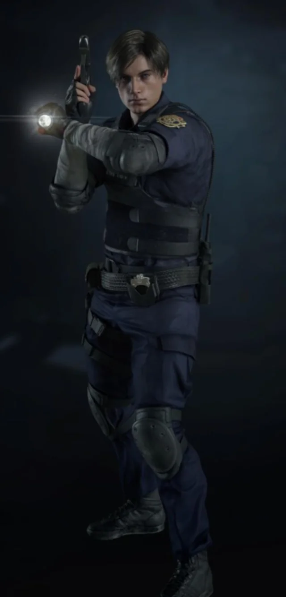
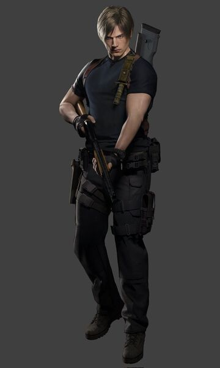
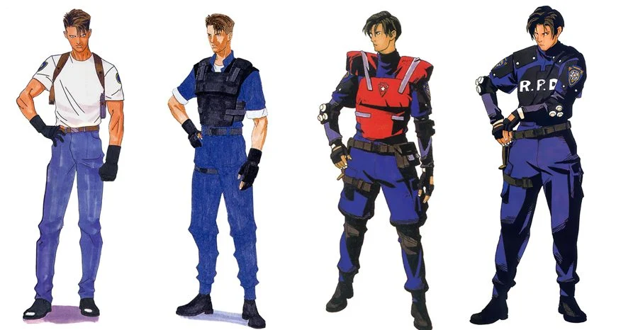

Leon S. Kennedy é um dos protagonistas mais icônicos de Resident Evil, evoluindo de um policial novato no desastre de Raccoon City (RE2) para um agente de elite do governo dos EUA (RE4, RE6) especializado em combate bioterrorista. Conhecido por sua sobrevivência em situações extremas, ele frequentemente atua ao lado de Ada Wong.
feitos do Leon
a primeira versão dele
resident evil 2 remake

resident evil 4 remake

ultima versão dele, RE9
1 Leon S. Kennedy é um dos rostos mais reconhecíveis da franquia Resident Evil. Desde sua primeira aparição como um policial novato tentando sobreviver ao surto em Raccoon City, o personagem evoluiu para um agente de elite do governo norte-americano, tornando-se uma peça central no combate global contra ameaças biológicas ao longo das últimas décadas.
2 A concepção original de Leon S. Kennedy para o inicial Resident Evil 1.5 o apresentava como um policial veterano. No entanto, o diretor Hideki Kamiya decidiu alterar essa abordagem durante o desenvolvimento final de Resident Evil 2, buscando um contraste maior em relação ao experiente Chris Redfield do primeiro jogo. Com essa mudança, o personagem foi reescrito como um novato idealista em seu primeiro dia de trabalho na polícia de Raccoon City. Essa decisão de design não apenas tornou Leon mais vulnerável aos olhos do jogador, mas também estabeleceu a base para o seu longo arco de amadurecimento ao longo de toda a franquia.

A sobrevivência inicial de Leon ao surto de Raccoon City se deveu a um misto de irresponsabilidade e sorte. O roteiro oficial do jogo estabelece que ele deveria ter chegado à cidade no início da infecção, mas atrasou sua viagem após ser abandonado pela namorada, passar a noite se embebedando e dormir demais no dia de sua apresentação no Departamento de Polícia. Esse atraso fortuito impediu que ele estivesse dentro da delegacia quando o caos principal tomou conta e o chefe de polícia Brian Irons trancou os oficiais no prédio. Ao chegar na cidade já devastada, o novato encontrou o cenário apocalíptico instaurado. Então, sim, dá para dizer que para piorar ainda mais a situação, o Leon tava de ressaca naquele dia.